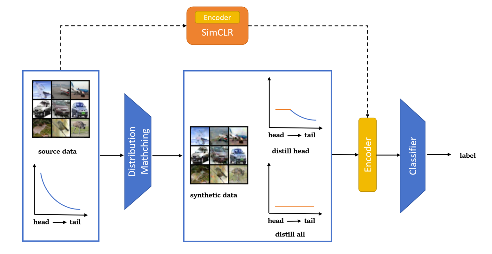

Abstract
Long-tail datasets often result in models overfitting to the head classes (classes with many samples) and performing poorly on the tail classes. In this paper, we aim to apply dataset distillation methods to long-tailed datasets for image classifier problems, which not only improves the training efficiency by reducing the data size but also effectively alleviates the long-tailed problem. With this idea, we propose the strategy called Condensing and Rebalancing Long-Tailed datasets with Dataset Distillation (CRLT-DD), using the method called distribution matching for dataset distillation and adding self-supervised pre-train before classifying. We experiment with our approach on CIFAR10-LT and CIFAR100-LT and successfully prove our idea. Our code will be made public.
Authors
Keya Hu Yijin Guo
Paper
Our paper is available here.
How CRLT_DD Works
